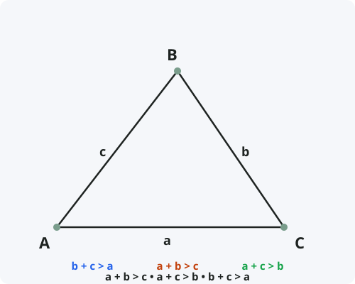

Неравенство треугольника
Формулировка
Сумма любых двух сторон треугольника всегда больше третьей стороны.
Обратно: если для трёх отрезков с длинами a, b, c выполняются все три неравенства a + b > c, a + c > b, b + c > a, то из этих отрезков можно составить треугольник.
Обозначения
Пусть дан треугольник со сторонами:
a, b, c — длины сторон треугольника.
Тогда справедливы неравенства:
a + b > c
a + c > b
b + c > a

Доказательство
Теорема доказана.
Доказательство (через ломаную)
Это наглядное геометрическое доказательство.
Следствия из теоремы
- Разность двух сторон: |a − b| < c (модуль разности любых двух сторон меньше третьей стороны).
- Если для трёх чисел a ≤ b ≤ c выполняется a + b > c, то из них можно составить треугольник.
- В вырожденном случае, когда a + b = c, точки лежат на одной прямой (треугольник вырождается в отрезок).
- Периметр треугольника всегда больше удвоенной любой его стороны.
- Неравенство треугольника является аксиомой метрики и лежит в основе определения расстояния.
Примеры применения
Пример 1. Проверьте, можно ли составить треугольник из отрезков длиной 5, 7 и 10.
Решение: Проверяем: 5 + 7 = 12 > 10 ✓; 5 + 10 = 15 > 7 ✓; 7 + 10 = 17 > 5 ✓. Треугольник существует.
Пример 2. Можно ли составить треугольник из отрезков 3, 4 и 8?
Решение: 3 + 4 = 7 < 8. Неравенство не выполняется. Треугольник не существует.
Пример 3. Две стороны треугольника равны 6 и 9. В каких пределах может лежать третья сторона?
Решение: По неравенству треугольника: c < 6 + 9 = 15 и c > |6 − 9| = 3. Ответ: 3 < c < 15.
Историческая справка
Неравенство треугольника было известно ещё в Древней Греции. Евклид в «Началах» (Книга I, Предложение 20) формулирует его так: «В любом треугольнике две стороны, взятые вместе, больше третьей».
Это одно из фундаментальных свойств евклидова пространства. Интересно, что в неевклидовых геометриях (например, на сфере) неравенство треугольника также выполняется, но для сферического расстояния.
В современной математике неравенство треугольника является одной из аксиом метрического пространства.
Интересные факты
- Неравенство треугольника работает не только в геометрии, но и для комплексных чисел, векторов и даже в теории вероятностей.
- Кратчайшее расстояние между двумя точками — прямая. Любой обходной путь длиннее — это и есть суть неравенства треугольника.
- В архитектуре и строительстве неравенство треугольника используется для проверки жёсткости конструкций (фермы, мосты).
- В программировании проверка неравенства треугольника — стандартная задача для определения возможности существования треугольника.
- Существует «обратное неравенство треугольника»: |a − b| ≤ c — оно тоже всегда выполняется для сторон треугольника.